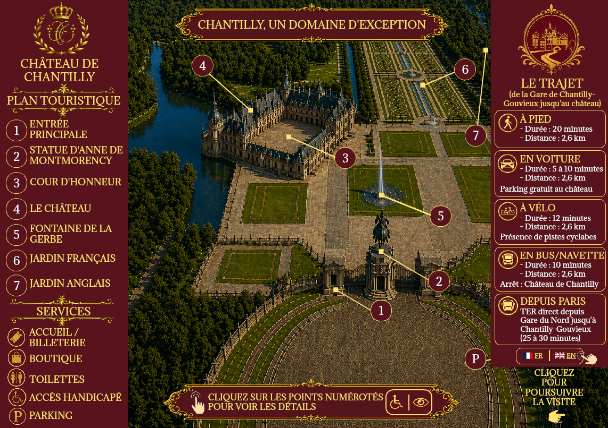

Concevoir une interface interactive permettant de faciliter la visite du Château de Chantilly, en regroupant les informations essentielles, les services disponibles et les différents points d’intérêt du domaine.
CM1
Concevoir une expérience de médiation numérique adaptée à différents profils d’utilisateurs
Page principale du guide touristique interactif du Château de Chantilly réalisé dans le cadre de mon alternance

Cliquez sur l’image pour voir les détails.
Le guide s’adresse à des visiteurs variés, notamment des touristes, des personnes découvrant le domaine pour la première fois et des publics ayant des besoins spécifiques d’accessibilité.
Rendre l’expérience de visite plus claire, plus accessible et plus engageante grâce à une interface visuelle organisée autour d’un plan interactif.
Ce que montre cette trace
Navigation interactive
Les points numérotés permettent d’identifier rapidement les lieux importants du domaine et de guider l’utilisateur dans son parcours.
Accessibilité
L’interface intègre des informations pratiques liées aux services, aux accès, aux langues et aux déplacements afin de prendre en compte différents profils de visiteurs.
Valorisation culturelle
Le plan met en avant les espaces emblématiques du château et accompagne la découverte du patrimoine par une présentation claire et visuelle.
Ergonomie
Les informations sont hiérarchisées entre la carte, les services, le trajet et les points de visite pour faciliter la compréhension de l’utilisateur.
Ma part dans le travail
J’ai conçu et réalisé l’ensemble de cette page du guide touristique interactif, notamment l’organisation des informations, la mise en page, l’intégration des pictogrammes, la conception de la navigation et les éléments liés à l’accessibilité.
Ce que cette réalisation démontre
Cette réalisation montre ma capacité à concevoir une expérience de médiation numérique adaptée à différents profils d’utilisateurs. Elle combine des enjeux d’ergonomie, d’accessibilité et de valorisation culturelle dans une interface claire, structurée et utilisable.
Analyse réflexive
Ce projet m’a permis de mieux comprendre l’importance de l’accessibilité et de l’organisation de l’information dans une expérience interactive destinée au public. Il m’a également appris à concevoir une interface qui ne soit pas seulement esthétique, mais aussi utile, compréhensible et adaptée aux besoins des visiteurs.